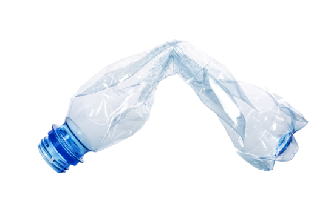
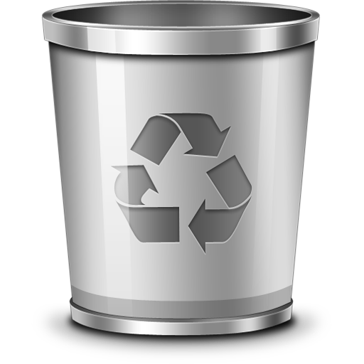
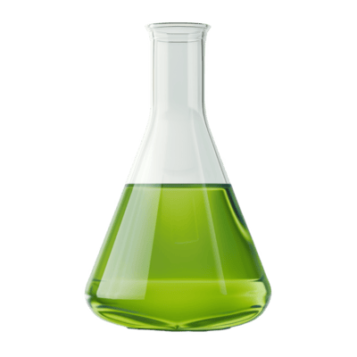

Recycling Reimagined
Innovative Solutions for a Sustainable Future
Welcome to Recycling Reimagined, an interactive educational website dedicated to exploring sustainable recycling methods and innovations in plastic recovery. Our platform explains how scientific research transforms discarded plastic waste into valuable resources. Here you will find detailed discussions on mechanical and chemical recycling methods, explore hybrid approaches that merge these techniques, and gain insights into future technologies driving the green revolution. Whether you are a student, educator, policymaker, or eco-enthusiast, our content is designed to inform, engage, and inspire. Delve into our interactive lab, in-depth articles, and comprehensive visual guides to understand how practical innovations and community initiatives contribute to a cleaner, healthier planet.
Interactive Recycling Lab
Drag the plastic bottle into your chosen recycling bin below:

Mechanical Recycling

Chemical Recycling
